Java Editor
Examples:
- java.lang.String
- String
- String#getBytes
- String.getBytes
- java.lang.String.getBytes(String)
- String.java:123
- at java.lang.String.matches(String.java:1550)
- java.lang.String.valueOf(char) line: 1456
- currentTimeMillis()
Note: If the action is not enabled in a certain perspective, then you can enable the Java Debug
action group in
 Window > Customize Perspective
> Command Groups Availability.
Window > Customize Perspective
> Command Groups Availability.
- Open Super Implementation: The action from the Navigate menu is now also available as a hyperlink.
It is enabled for overridden methods and opens the super implementation of the selected method.
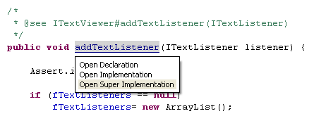
- Open Declared Type: This link is enabled for local variables and fields. When invoked, it
opens the declared type of the variable in an editor:

- Open Return Type: This link is enabled for methods. When invoked, it opens the return type of the method
in an editor:
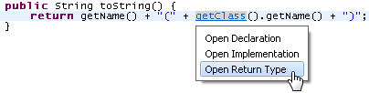
By default, the hyperlink appears when you hold down the Ctrl key while hovering over an appropriate element,
or when you use the Navigate > Open Hyperlink command.
You can configure the modifier for the hyperlinks on the
The hyperlink style navigation can be configured on the
General > Editors > Text Editors > Hyperlinking
preference page.
instanceof
keyword, but also in the body of the conditional statement (before the first body statement).
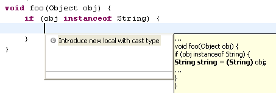
null.
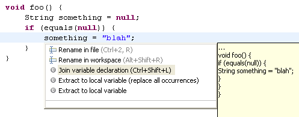
!=, <, <=, >,
and >= operators.
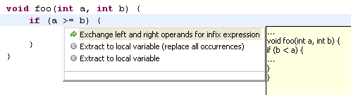
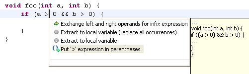
Also the Add paranoiac parentheses quick assist has been renamed to Put expressions in parentheses.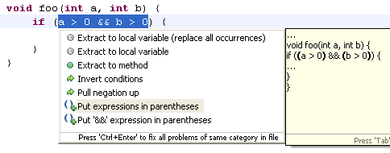
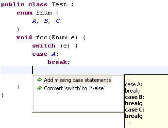
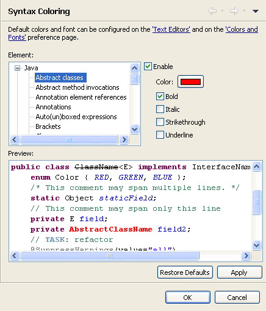
The rendering can be configured on the Java > Editor > Syntax Coloring preference page.
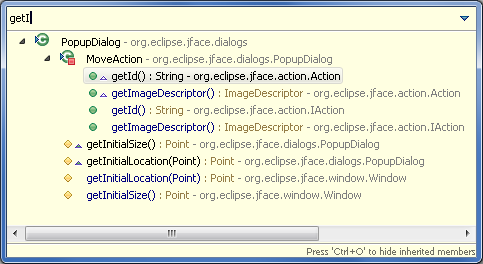
The focus types that can show inherited members are marked with a triangle (  ).
).
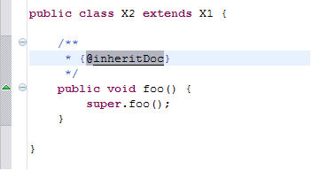
In this example, the target of the @inheritDoc inline tag on X2.foo() is X1.foo().
break or continue statement,
you can now Ctrl+click or use Open Declaration (F3) on break or continue keywords or their labels.
Navigation on...
break: jumps to the end of the target statementcontinue: jumps to the beginning of the target statement- a label: jumps to the label declaration
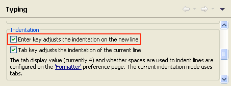
Java Formatter
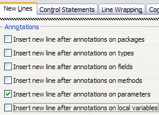
For example, with this preference activated as shown above, the formatted code looks like this:
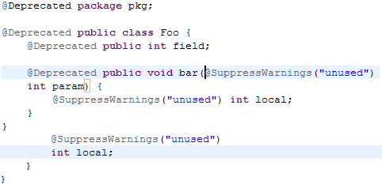
Formatter profiles can be configured on the
Java > Code Style > Formatter preference page.
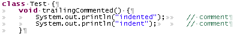
This preference can be enabled on the
Java > Code Style > Formatter preference page
on the Comments tab:
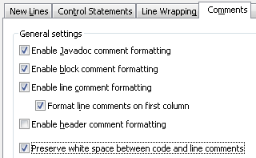
Java Compiler
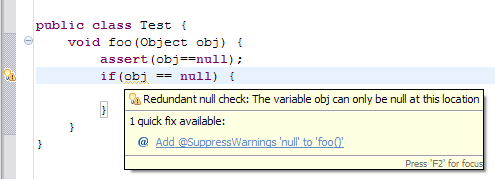
The new option Include 'assert' in null analysis is disabled by default and can be
enabled on the
Java > Compiler > Errors/Warnings
preference page.
@param tag.
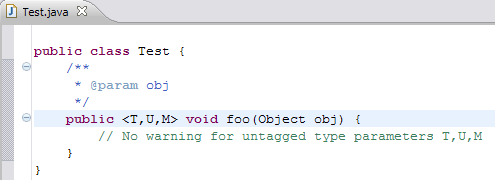
The new Ignore method type parameters option is enabled by default and can be disabled on the
Java > Compiler > Errors/Warnings
preference page.
- compound assignment
- prefix/postfix increment/decrement expression
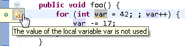
In case the above expressions involve an unboxing operation, the variable is not reported as unused.
We also changed the wording from "X has never been read" to "The value of X is not used."
Java > Compiler > Errors/Warnings
page by preference
label text or by preference value. A word in the filter string preceded by '~' is used to filter on
preference values. Examples:
- param
- ~off
- ~ignore
- param ~enabled
- ~ignore param
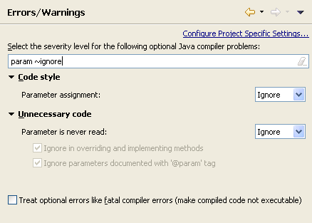
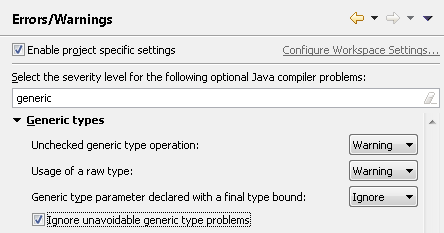
Those problems only show up because a type refers to an old API that uses raw types.
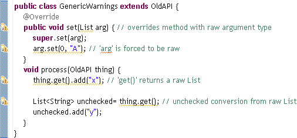
When the old API is eventually generified, then these problems either go away, or you will see a compile error because the type arguments you used are not correct.
This option is disabled by default but can be enabled on the
Java > Compiler > Errors/Warnings
preference page.
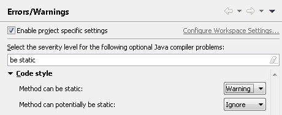
The first option marks private and final methods than can always be made static.
The second option also marks other methods. Note that methods can be overridden in a subclass, so if you
make a "potentially static" method static, this may break existing clients.
These options are disabled by default.
@SuppressWarnings annotation@SuppressWarnings annotation can now also be used to suppress compile warnings/errors related
to Javadoc issues:
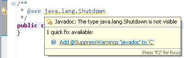
Java Views and Dialogs
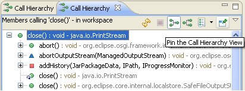
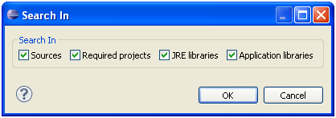
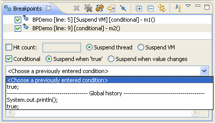
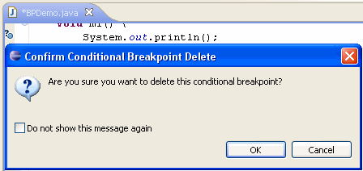
You can specify that you would not like to be notified again when trying to remove a conditional breakpoint. This can later be changed again
via Prompt for confirmation when deleting a conditional breakpoint from editor on the
Java > Debug
preference page.
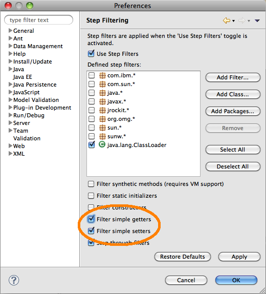
Consider single stepping into statements like:
computeEffect(meters.getCurrent(), meters.getVoltage());
Normally, this means first stepping into getCurrent, then into getVoltage, and finally into computeEffect.
You can now skip the first two steps (provided they are simple bean-style getters), and jump directly into the
computeEffect method, by selecting the Filter simple getters check box on the
Java > Debug > Step Filtering
preference page.
Similarly, selecting Filter simple setters avoids stopping inside simple bean-style setters when using Step Into.
Properties File Editor
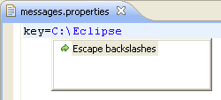 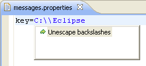
The Escape backslashes quick assist is also offered automatically on paste if the pasted text contains backslashes that should be escaped.
JUnit
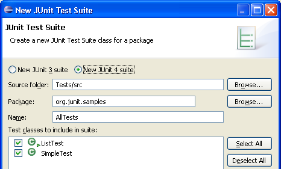
Result:@RunWith(Suite.class)
@SuiteClasses({ ListTest.class, SimpleTest.class })
public class AllTests {
}
Preferences > Java > JUnit > Show newly launched test in all JUnit views:
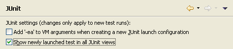
Supported test run formats are XML files exported from the JUnit view or generated by the Ant JUnit task.